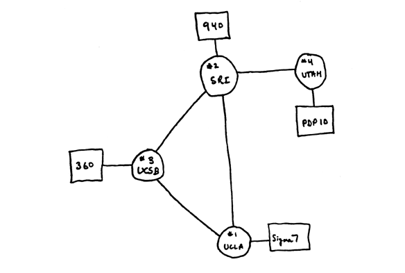
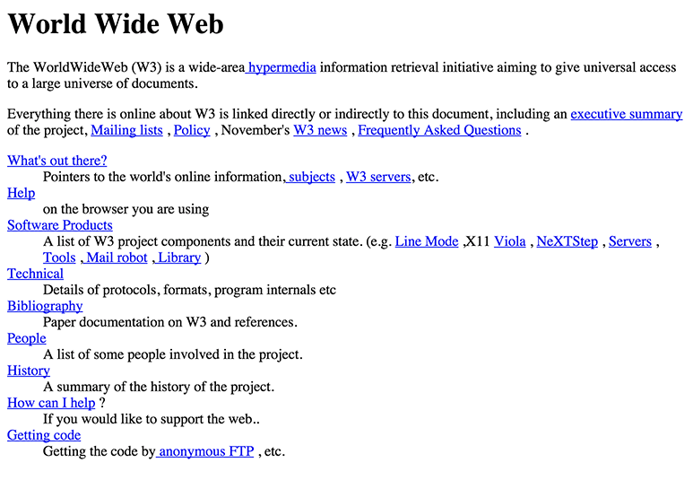

Input & Output
input: information provided to a computer which is processed.
output: results generated by a computer process.
Binary (base 2)
A numeral system represented by zeros (0) and ones (1).
Represents 'on' and 'off' electrical states of a computer processor.
This is the most basic 'language' a computer understands.
Numeric Information
A sequence of binary can represent numbers in decimal (base 10), the numeric system we use daily.
| Binary | 0 | 1 | 10 | 11 | 100 | 101 |
|---|---|---|---|---|---|---|
| Decimal | 0 | 1 | 2 | 3 | 4 | 5 |
There are 10 types of people in the world: Those who understand binary and those who don't.
🤓
Binary to Decimal
Converting binary to decimal provides us with numbers for:
- mathematical calculations
- a foundation for symbols familiar to humans
Character-Based Information
Text is the best method for humans to communicate with a computer.
We find common ground by using a character set, letters of a language (and keystrokes) mapped to a binary sequence.
ASCII
American Standard Code for Information Interchange (or ASCII (ask-key) is a standard character set used by computers.
- 128 characters — letters, numbers, punctuation
- 'control' characters (i.e. return, tab, delete)
- binary ranges from 0000000 to 1111111
In ASCII, 1110111 1100101 1100010 represents the word web.
ASCII Table

Note the binary sequence for uppercase and lowercase letters differs. Computers are case sensitive.
Instructing Computers
When we want to give a computer instructions...
- A sequence of human-readable characters become strings
- Combinations of strings form instructions
- Compound instructions become programs
- Syntax used to write programs represent a language
Origns of the Internet
Defense Advanced Research Projects Agency (DARPA) needed:
- to share computer resources
- secure communications in a crisis (i.e. nuclear war)
The project resulted in ARPANET, a four-node network unveiled in 1969.
ARPANET, 1969
- University of California, Los Angeles
- Stanford Research Institute
- University of California, Santa Barbara
- University of Utah
'lo' and Behold!
The first message transmitted on ARPANET:
lo
It was supposed to be login:, but the computer crashed.
Beyond ARPANET
- 1981: Grew to 213 host computers
- 1985: Evolves into NSFNet — the Internet's backbone
- 1990: ARPANET decommissioned
- 1995: NSFNet decommissioned; commercial traffic permitted
ARPANET lessons
- Standardized communication protocols
- Transmission Control Protocol (TCP)
- Internet Protocol (IP)
- Applications
- File Transfer Protocol (FTP)
TCP
- Computer A breaks a file into packets, attaches metadata
- Packets are sent over a network to Computer B
- Computer B reassembles packets, verifies the file is correct
If the file is incomplete, Computer B refers to the metadata as if it were a checklist and request Computer A re-send the missing packet.
IP
- Determines the path across a network which packets travel
- Provides each node with a unique address
A node may be anything connected to a network, in this case, the Internet.
Every device in the world...
IP Addresses
- Identifies location as it relates to the Internet and physical geography
- What is your IP address?
Domain Names
- A directory for the Internet
- Each domain is mapped to an IP address
- A Domain Name Server routes requests to the correct IP addres
Anatomy of a Domain Name
www.google.com
- edu: top-level domain
- google: domain
- we can 'reserve' these for our own use
- www: subdomain (optional)
Combined, these create a fully qualified domain name.
Acquiring a domain name
- Obtained through a domain name registrar
- Fees very depending on name, registrar
- Country codes (i.e.
.us) may be limited to residents - Minimum one-year lease
- No one 'owns' a domain
Hypertext
A system which connects information through hyperlinks.
Hyperlinks are reference points connect an element (word, phrase, image) to another document providing more information.
Origins of the Web
- Internet-based hypertext system
- 1989: Proposed by Sir Tim Berners-Lee & Robert Cailliau
- 1991: Released to public
- Aug. 1992: 26 web sites
- Dec. 1993: 632 web sites
info.cern.ch
WWW Lessons
- URL: Uniform Resource Locator
- HTTP: Hypertext Transfer Protocol
- HTML: Hypertext Markup Language
URL
- A unique address for a file on the web
- No two files can have the same URL
- Two parts:
- How is the file transferred (http or https)?
- The location of the file
HTTP
- The browser requests a file from a server
- The server acknowledges the request, sends a response:
- 200: Okay! (file is sent)
- 404: File not found
- 500: Server error (URL may be right)
HTML
We will start learning this next week.
Building Web Sites
- HTML: describes the structure, semantics of content
- CSS: presents content for different media (mostly visual)
- JavaScript: influences behavior of the document
Web Standards
- Developed by the W3C
- Assures web sites are forward, backward compatible